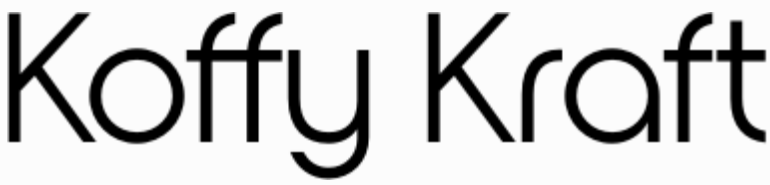

High-flow recirculation
The process keeps liquid moving across the coffee bed, reducing stagnant zones and speeding useful extraction.

Cold Brew lab
KoffyKraft's VITO Cold Brew work explores warm-to-cool, high-flow recirculating extraction for smooth concentrates that can become cold brew, iced latte, or hot milk drinks.
| Variable | Current pilot range | Why it matters |
|---|---|---|
| Coffee dose | About 200 g | Creates a concentrate rather than a ready-to-drink brew. |
| Water | About 1000-1200 ml | Sets strength and later dilution flexibility. |
| Temperature | Warm start around 40 C, below 60 C | Targets smoother extraction while avoiding harsh late-stage bitterness. |
| Cycle | Short runs with rests | Uses recirculation and contact time rather than pressure. |
| Service | Dilute for cold brew, iced latte, or hot latte | One concentrate can support several cafe drinks. |
The process keeps liquid moving across the coffee bed, reducing stagnant zones and speeding useful extraction.
Best framed as a repeatable batch-prep method, with hygiene, chilled storage, dilution ratios, and service speed clearly explained.
The page should invite testing: measure strength, taste cleanly, log batch changes, and avoid claiming one method fits all coffees.
Cold Brew belongs after the Brewing course basics. It is a useful applied lab for ratio, extraction, temperature, dilution, and sensory comparison.